Becoming Friends with Your Camera
Three small experiments in perspective, focal length, and the center of projection — a distorted selfie fixed by stepping back, a building that compresses or looms depending on how you shoot it, and a Hitchcock “Vertigo” dolly zoom built from eight stills.
The Wrong Way vs. the Right Way
A selfie taken from close range versus one taken by stepping back several feet and zooming in to match the framing.
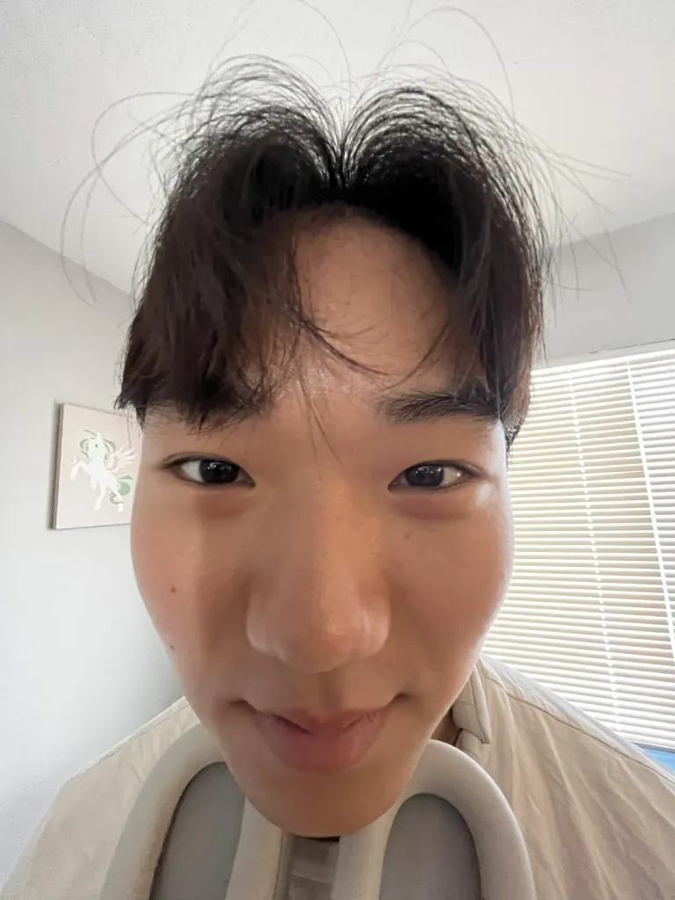
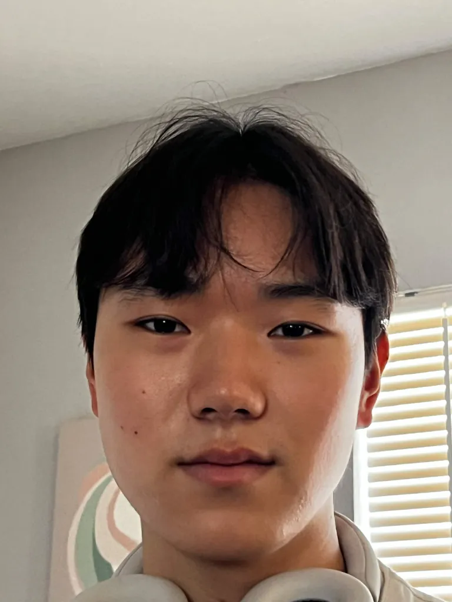
Why the difference? When the camera is close to a face, the center of projection sits close too, so parts of the face nearer the lens (the nose, forehead) subtend a much wider angle than parts farther away (the ears) — the near features balloon relative to the far ones. Step back and zoom in to compensate, and the camera-to-subject distance becomes large relative to the depth of the face itself, so every feature is roughly equidistant from the lens. The angles even out, and the result reads as normal, flattering proportions.
Architectural Perspective Compression
Sather Tower (the Campanile), shot two ways: zoomed in from a distance, and up close without zoom.
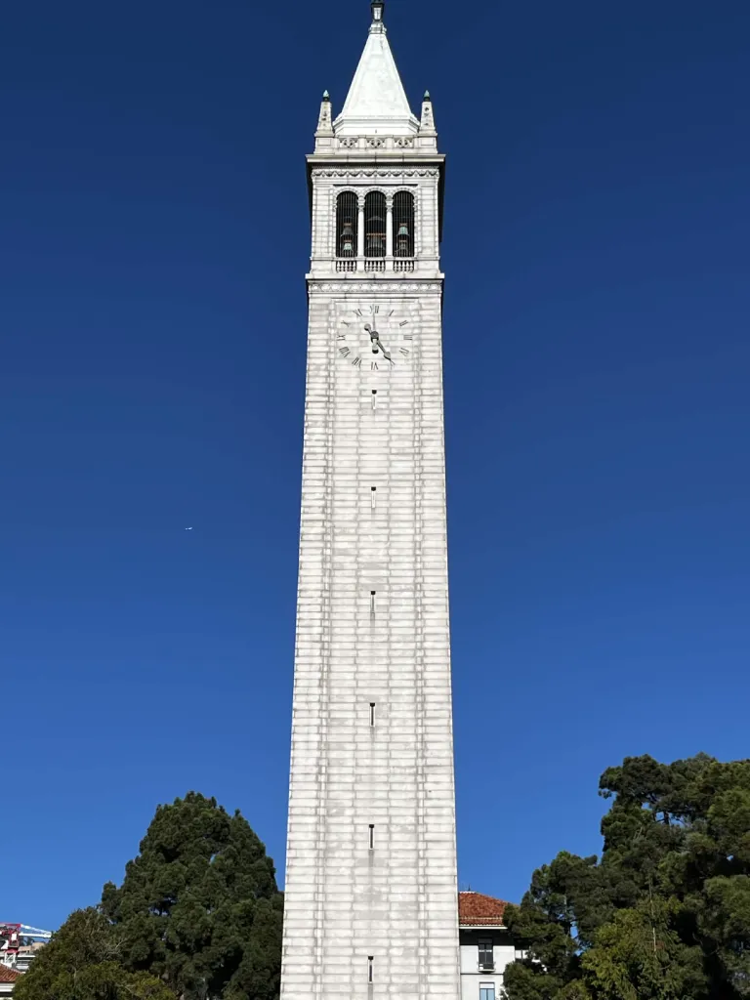
Standing far away and zooming in narrows the field of view enough that the distance from the camera to the base of the tower and the distance to its spire become nearly equal — depth gets compressed, and the tower reads as flatter against its background. Walk up close instead, and the base of the tower is now dramatically nearer to the camera than the top is, so the vertical lines converge sharply toward a vanishing point — the same building suddenly feels like it’s looming overhead.
The Dolly Zoom
The “Vertigo” effect: move the camera back while zooming in to keep the subject the same size, and the background stretches and warps around it. Eight handheld stills, stitched into a loop.
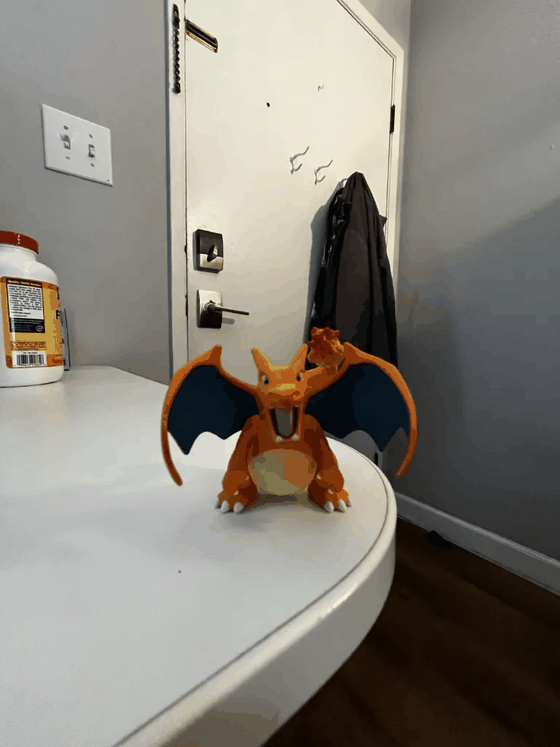
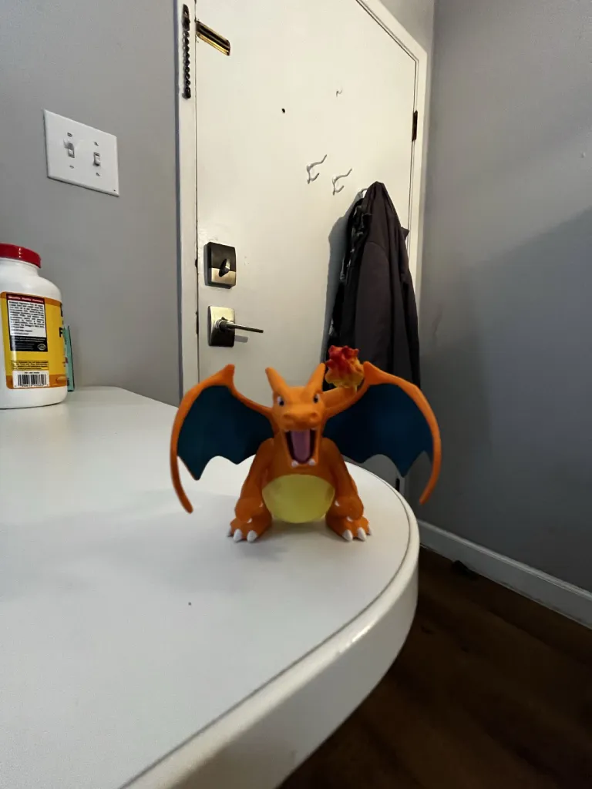
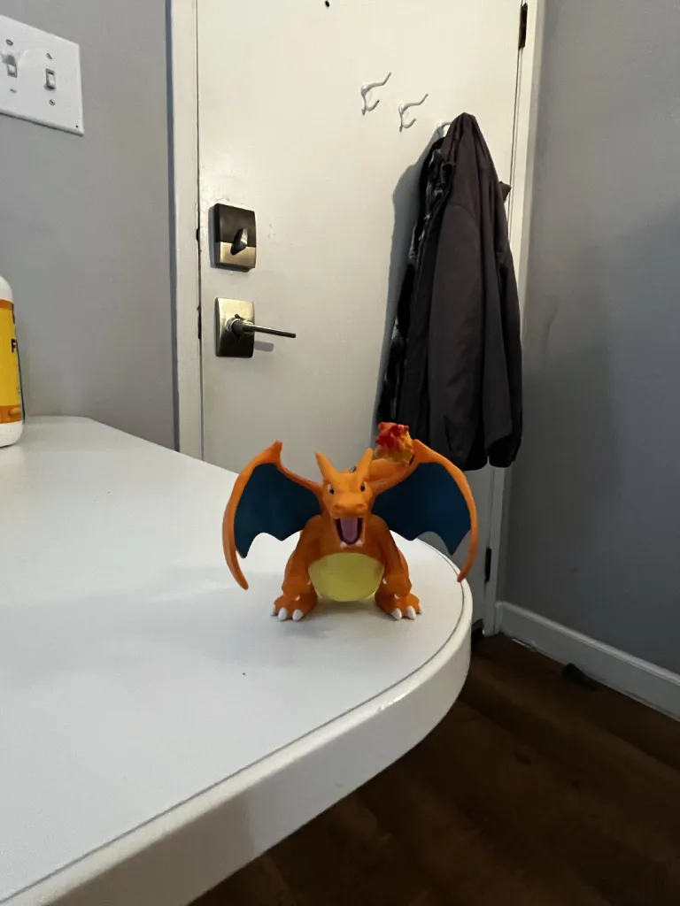
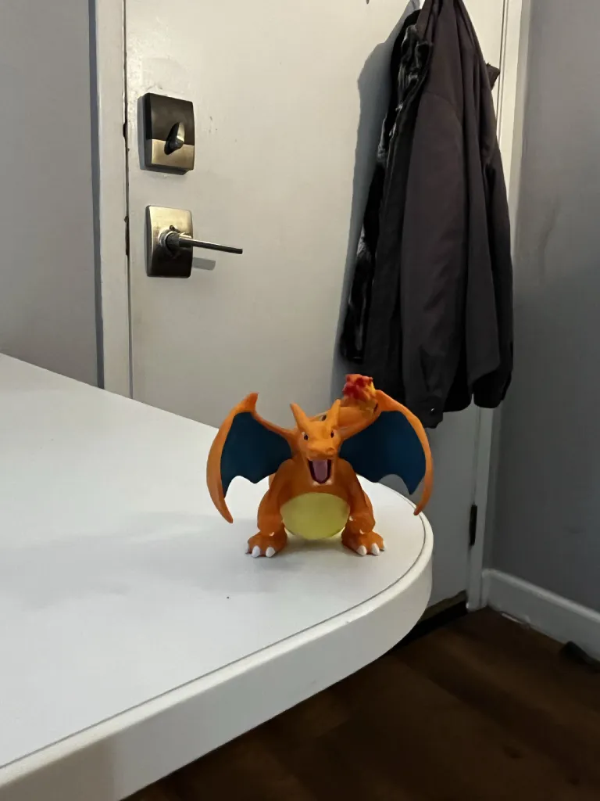
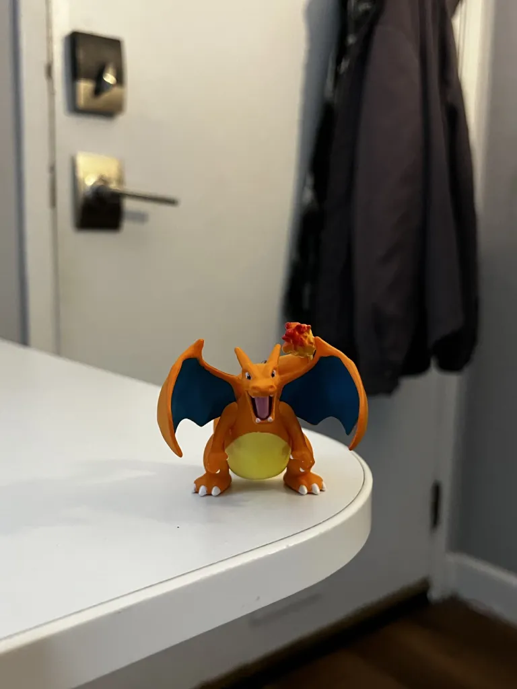
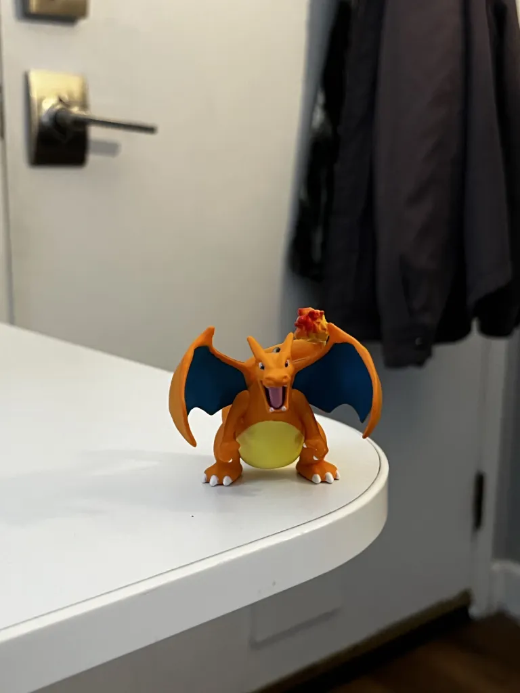
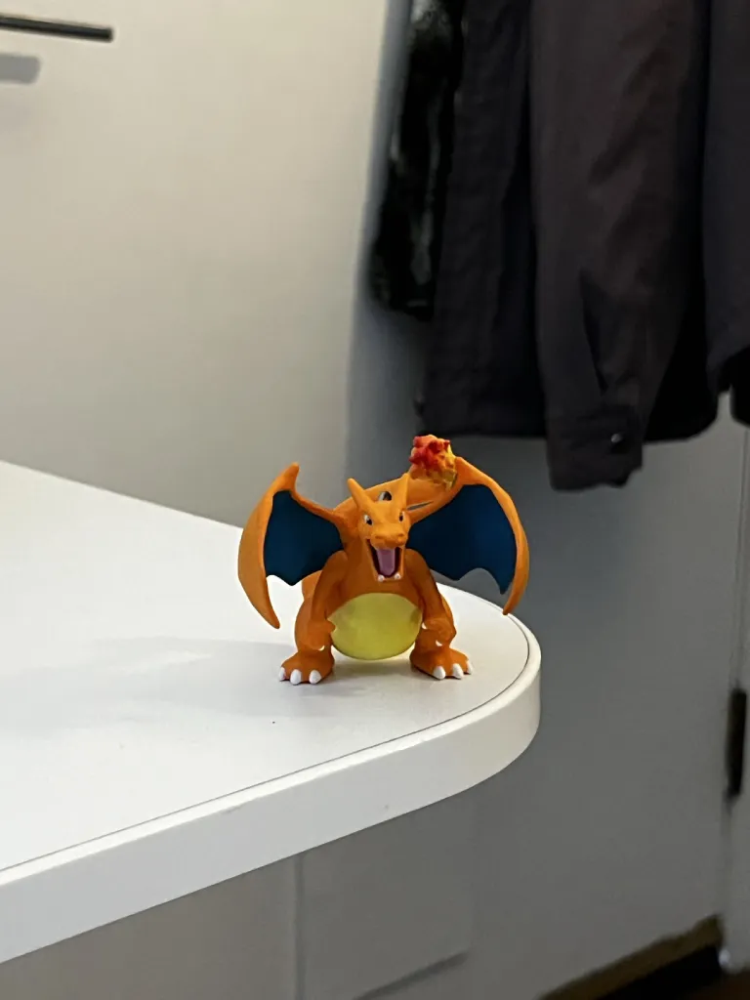
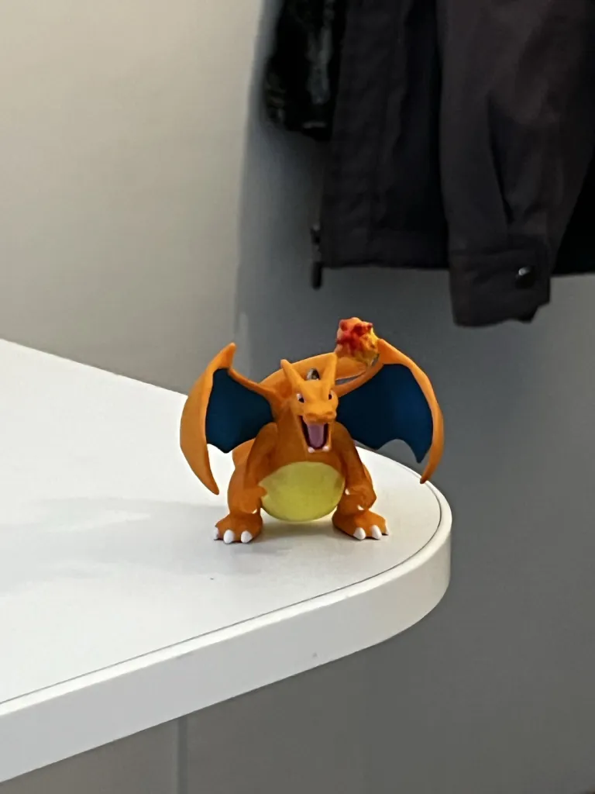
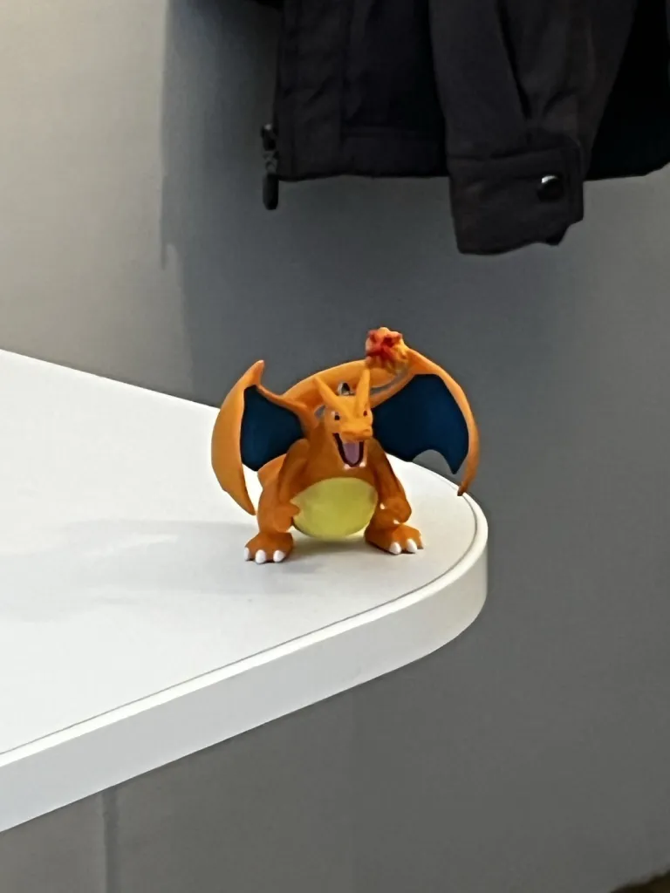
Continuous comparison
The same move, shot as a continuous video instead of stills, for comparison against the stitched GIF above.